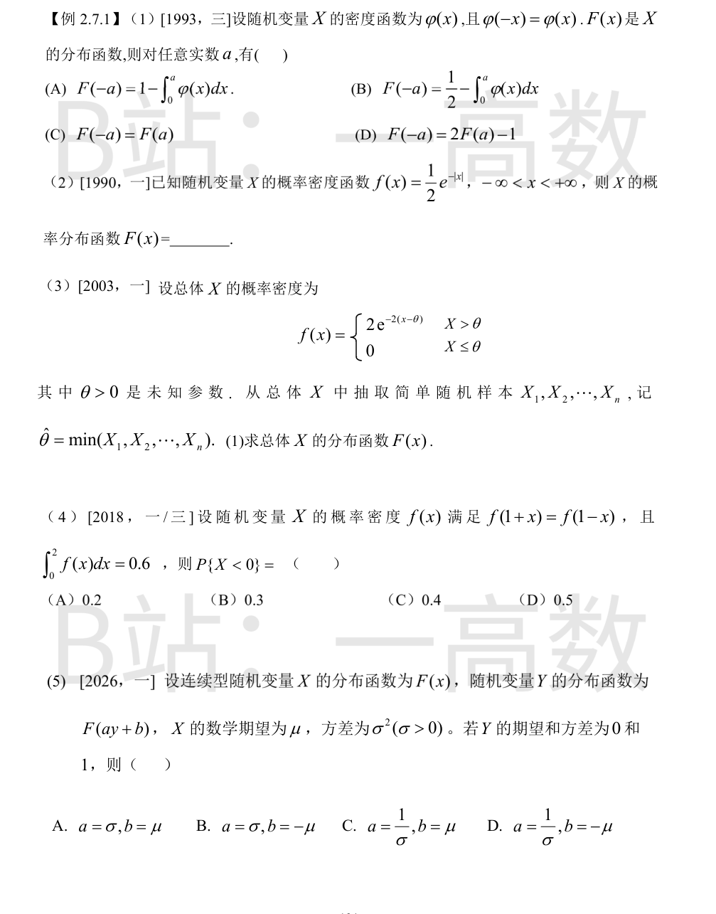
由分布函数定义与偶函数性质：
$$F(-a)=\int_{-\infty}^{-a}\varphi(x)\,dx \xlongequal{x=-t}\int_{a}^{+\infty}\varphi(t)\,dt=1-F(a).$$
又 $\varphi$ 为偶函数，故 $\int_{-\infty}^{0}\varphi\,dx=\dfrac12$，从而
$$F(a)=\frac12+\int_{0}^{a}\varphi(x)\,dx \;\Longrightarrow\; F(-a)=1-\frac12-\int_{0}^{a}\varphi(x)\,dx=\frac12-\int_{0}^{a}\varphi(x)\,dx.$$
验证：(A) 中 $1-\int_0^a\varphi\,dx=1-F(a)+\frac12\neq F(-a)$（除非 $F(a)=\frac12$）；(C)(D) 显然不满足 $F(-a)=1-F(a)$。选 (B)。
分段积分。
当 $x<0$：
$$F(x)=\int_{-\infty}^{x}\frac12 e^{t}\,dt=\frac12 e^{x}.$$
当 $x\ge 0$：
$$F(x)=\int_{-\infty}^{0}\frac12 e^{t}\,dt+\int_{0}^{x}\frac12 e^{-t}\,dt=\frac12+\frac12\big(1-e^{-x}\big)=1-\frac12 e^{-x}.$$
检验：$F$ 连续（$F(0)=\frac12$ 两侧一致）、单调不减、$F(+\infty)=1$，$F'=f$。此即 Laplace 分布。
当 $x\le\theta$ 时 $f=0$，故 $F(x)=0$。
当 $x>\theta$ 时：
$$F(x)=\int_{\theta}^{x}2e^{-2(t-\theta)}\,dt=\Big[-e^{-2(t-\theta)}\Big]_{\theta}^{x}=1-e^{-2(x-\theta)}.$$
检验：$F(\theta^+)=0$ 连续，$F(+\infty)=1$，$F'=f$。即 $X\sim\theta+\mathrm{Exp}(2)$（平移指数分布）。
$f(1+x)=f(1-x)$ 说明密度关于 $x=1$ 对称，故 $\displaystyle\int_0^2 f\,dx=2\int_0^1 f\,dx=0.6$，即 $\int_0^1 f\,dx=0.3$；且由对称性
$$\int_{-\infty}^{0}f\,dx=\int_{2}^{+\infty}f\,dx=\frac{1-0.6}{2}=0.2.$$
故 $P\{X<0\}=\int_{-\infty}^{0}f\,dx=0.2$，选 (A)。
设 $Y$ 的分布函数 $F_Y(y)=F(ay+b)$（$a\neq0$），则 $Y$ 与 $\dfrac{X-b}{a}$ 同分布，因为
$$P\Big\{\frac{X-b}{a}\le y\Big\}=P\{X\le ay+b\}=F(ay+b).$$
于是 $E Y=\dfrac{\mu-b}{a}=0\Rightarrow b=\mu$；$Var\,Y=\dfrac{\sigma^2}{a^2}=1\Rightarrow a^2=\sigma^2$。四个选项中 $a$ 只取正值，故 $a=\sigma,\ b=\mu$，选 (A)。
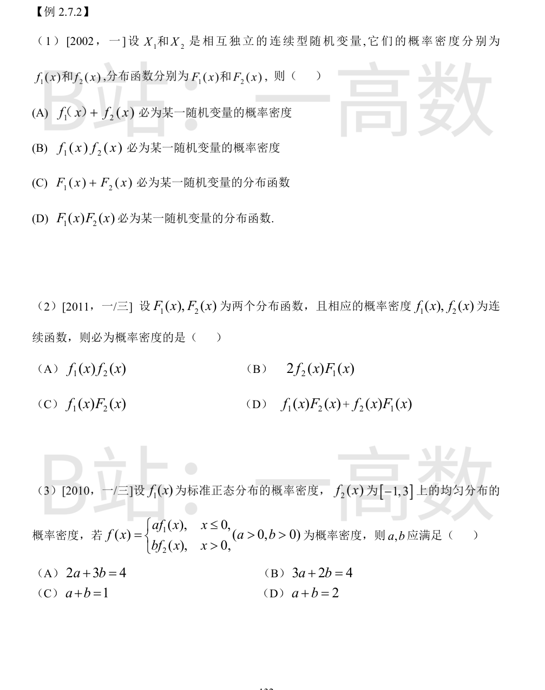
(A) $\int_{-\infty}^{+\infty}(f_1+f_2)dx=1+1=2\neq1$，排除。
(B) 反例：$X_1,X_2\sim U(0,2)$，$f_1f_2=\frac14$ 于 $(0,2)$，积分 $=\frac12\neq1$，排除。
(C) $\lim_{x\to+\infty}(F_1+F_2)=2\neq1$，不满足分布函数归一性，排除。
(D) $G(x)=F_1(x)F_2(x)$：单调不减（两不减函数之积）、右连续、$G(-\infty)=0$、$G(+\infty)=1$，满足分布函数三条性质；事实上 $G$ 正是 $\max(X_1,X_2)$ 的分布函数 $P\{X_1\le x, X_2\le x\}$（用了独立性）。选 (D)。
记 $G(x)=F_1(x)F_2(x)$，它是 $\max(X_1,X_2)$ 的分布函数（上题结论），且 $G(-\infty)=0,\ G(+\infty)=1$。由密度连续，
$$G'(x)=f_1(x)F_2(x)+f_2(x)F_1(x),$$
于是
$$\int_{-\infty}^{+\infty}\big[f_1F_2+f_2F_1\big]\,dx=G(+\infty)-G(-\infty)=1,$$
且被积函数非负连续，故 (D) 是概率密度。
(A)(B)(C) 的积分均不必为 1（如两同分布 $U(0,2)$ 时 $\int f_1f_2=\frac12$；$\int 2f_2F_1dx=2E[F_1(X_2)]$ 未必为 1）。选 (D)。
归一性：$1=\int_{-\infty}^{0}af_1\,dx+\int_{0}^{+\infty}bf_2\,dx$。
第一段：$a\displaystyle\int_{-\infty}^{0}\frac{1}{\sqrt{2\pi}}e^{-x^2/2}dx=a\cdot\frac12=\frac a2$（标准正态关于 0 对称）。
第二段：$f_2=\dfrac14$ 于 $[-1,3]$，故 $\displaystyle\int_{0}^{+\infty}f_2\,dx=\int_{0}^{3}\frac14\,dx=\frac34$，该段积分 $=\dfrac{3b}{4}$。
于是 $\dfrac a2+\dfrac{3b}{4}=1$，即 $2a+3b=4$，选 (A)。
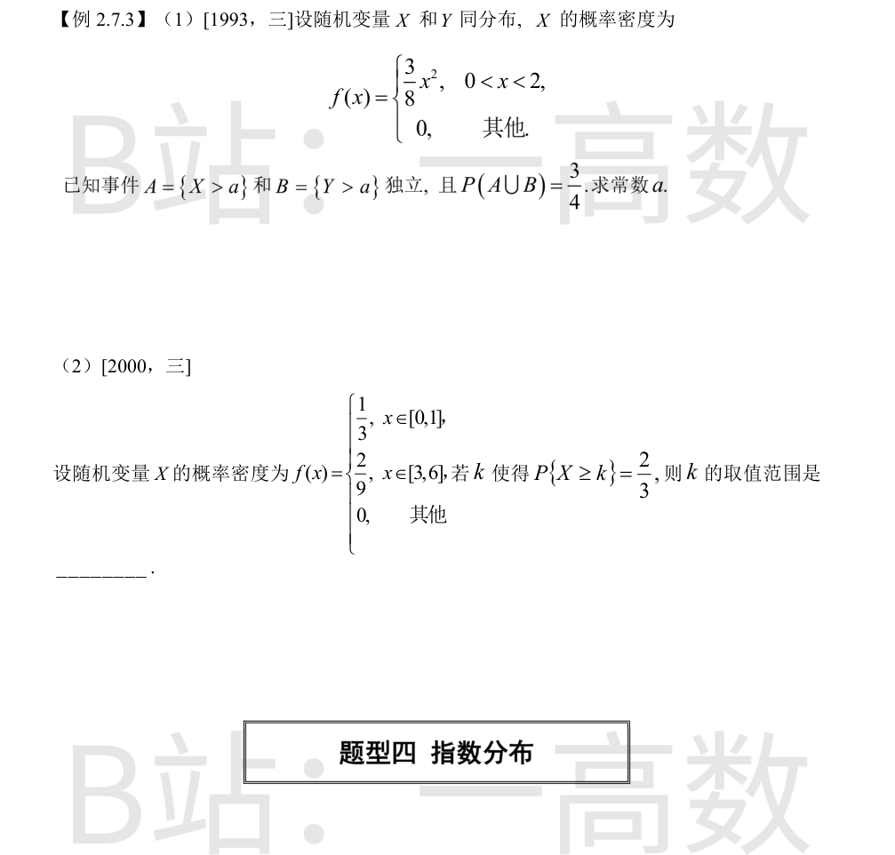
记 $p=P\{X>a\}$。当 $0<a<2$：
$$p=\int_a^2\frac38x^2\,dx=\frac18\big(8-a^3\big)=1-\frac{a^3}{8}.$$
由 $A,B$ 独立且同分布：
$$P(A\cup B)=p+p-p^2=\frac34\;\Longrightarrow\;p^2-2p+\frac34=0\;\Longrightarrow\;p=\frac{2\pm1}{2}=\frac32\ \text{或}\ \frac12.$$
$p\le1$，舍 $\frac32$，得 $p=\frac12$。于是 $1-\dfrac{a^3}{8}=\dfrac12\Rightarrow a^3=4\Rightarrow a=\sqrt[3]{4}\approx1.587\in(0,2)$，符合题设。
各段概率：$P\{0\le X\le1\}=\dfrac13$，$P\{3\le X\le6\}=\dfrac29\times3=\dfrac23$。
- $k\in(1,3]$：$P\{X\ge k\}=P\{3\le X\le6\}=\dfrac23$，恒成立；
- $k=1$：$P\{X\ge1\}=\dfrac23$，成立；
- $k\in[0,1)$：$P\{X\ge k\}=\dfrac{1-k}{3}+\dfrac23>\dfrac23$，不成立；
- $k<0$：$P=1$；$k\in(3,6]$：$P=\dfrac29(6-k)<\dfrac23$；$k>6$：$P=0$，均不成立。
故 $k$ 的取值范围是 $1\le k\le 3$，即 $k\in[1,3]$。
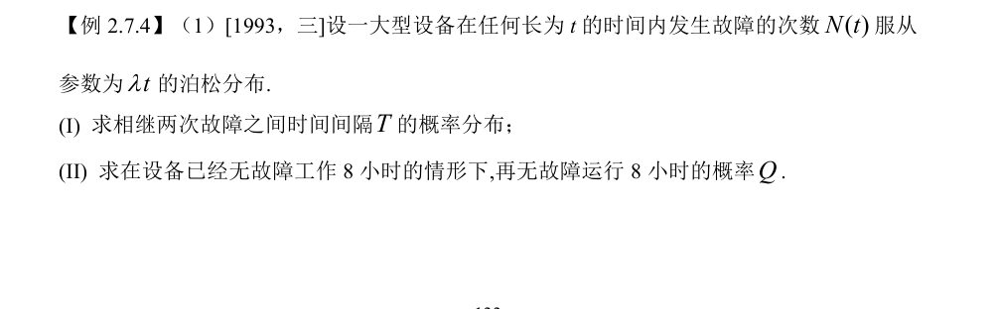
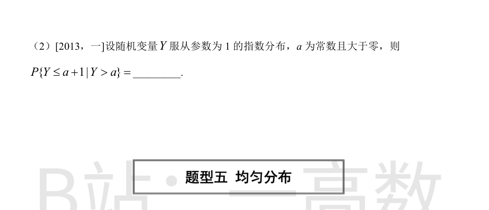
(I) $T$ 是从某次故障到下一次故障的等待时间。当 $t\ge0$：
$$P\{T>t\}=P\{N(t)=0\}=\frac{(\lambda t)^0}{0!}e^{-\lambda t}=e^{-\lambda t},$$
故
$$F_T(t)=P\{T\le t\}=\begin{cases}1-e^{-\lambda t}, & t\ge0,\\0, & t<0.\end{cases}$$
即 $T$ 服从参数为 $\lambda$ 的指数分布。
(II) 由指数分布的无记忆性（或直接用泊松分布独立增量）：
$$Q=P\{T\ge16\mid T\ge8\}=\frac{P\{T\ge16\}}{P\{T\ge8\}}=\frac{e^{-16\lambda}}{e^{-8\lambda}}=e^{-8\lambda}.$$
注意 $Q=P\{T\ge8\}$：已无故障工作 8 小时的条件不改变后续等待时间的分布。
$f(y)=e^{-y}\ (y\ge0)$，$P\{Y>a\}=e^{-a}$。
$$P\{Y\le a+1\mid Y>a\}=\frac{P\{a<Y\le a+1\}}{P\{Y>a\}}=\frac{e^{-a}-e^{-(a+1)}}{e^{-a}}=1-e^{-1}.$$
即无记忆性：$P\{Y\le a+1\mid Y>a\}=P\{Y\le1\}=1-e^{-1}\approx0.632$。
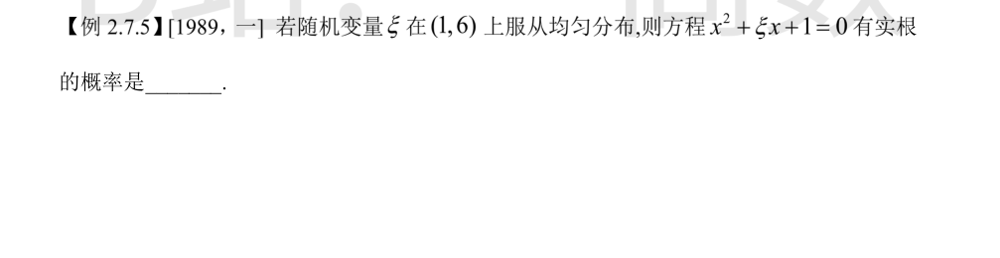
方程有实根 $\iff$ 判别式 $\Delta=\xi^2-4\ge0\iff\xi\ge2$（因 $\xi>1>0$，舍 $\xi\le-2$）。
$\xi\sim U(1,6)$，密度 $f=\dfrac15$ 于 $(1,6)$，故
$$P\{\xi\ge2\}=\frac{6-2}{6-1}=\frac45.$$
（$\{2\le\xi<6\}$ 的长度为 4，区间总长 5。）
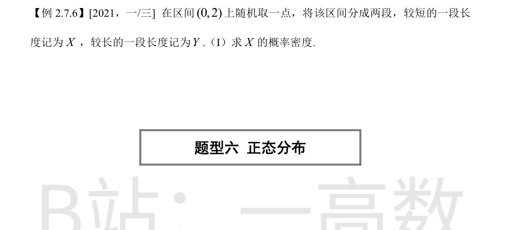
设取点坐标 $U\sim U(0,2)$，则 $X=\min(U,\,2-U)\in(0,1)$。
当 $0<x<1$：
$$F_X(x)=P\{\min(U,2-U)\le x\}=1-P\{x<U<2-x\}=1-\frac{(2-x)-x}{2}=1-(1-x)=x.$$
当 $x\le0$ 时 $F_X=0$；$x\ge1$ 时 $F_X=1$。
故 $f_X(x)=F_X'(x)=1\ (0<x<1)$，其他为 0，即 $X\sim U(0,1)$。
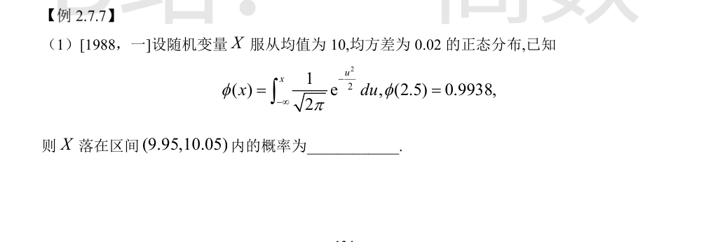
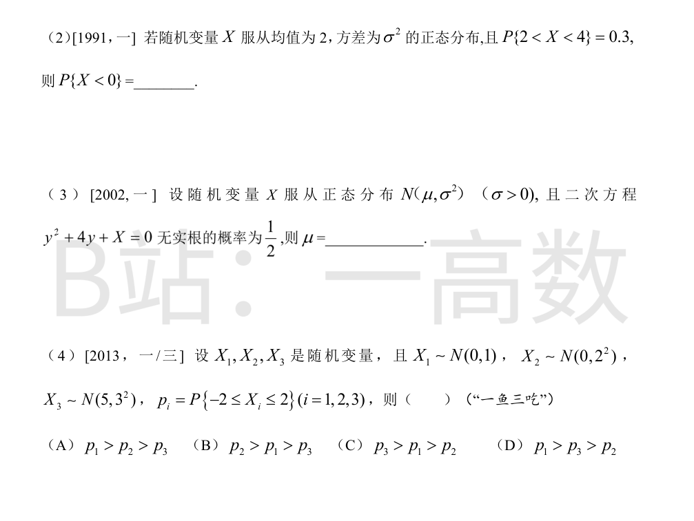
均方差即 $\sigma=0.02$。标准化：
$$P\{9.95<X<10.05\}=P\Big\{\Big|\frac{X-10}{0.02}\Big|<\frac{0.05}{0.02}\Big\}=P\{|Z|<2.5\},\quad Z\sim N(0,1).$$
$$P\{|Z|<2.5\}=2\Phi(2.5)-1=2\times0.9938-1=0.9876.$$
（题给 $\phi(x)=\int_{-\infty}^{x}\frac{1}{\sqrt{2\pi}}e^{-u^2/2}du$ 即标准正态分布函数 $\Phi$。）
正态密度关于 $x=2$ 对称，故 $P\{X<2\}=P\{X>2\}=0.5$。
$$P\{X\ge4\}=P\{X>2\}-P\{2<X<4\}=0.5-0.3=0.2.$$
0 与 4 关于对称轴 $x=2$ 等距，故 $P\{X<0\}=P\{X>4\}=0.2$。
方程无实根 $\iff$ 判别式 $\Delta=16-4X<0\iff X>4$。
由 $P\{X>4\}=\dfrac12$，而正态分布仅有关于 $x=\mu$ 的一半概率（$P\{X>\mu\}=\dfrac12$）且单峰对称，故 $\mu=4$。
严格地说：$P\{X>4\}=1-\Phi\big(\frac{4-\mu}{\sigma}\big)=\frac12\Rightarrow\frac{4-\mu}{\sigma}=0\Rightarrow\mu=4$。
$p_i=P\Big\{\dfrac{-2-\mu_i}{\sigma_i}\le Z\le\dfrac{2-\mu_i}{\sigma_i}\Big\}$：
$$p_1=P\{-2\le Z\le2\}=2\Phi(2)-1\approx0.954\,5.$$
$$p_2=P\{-1\le Z\le1\}=2\Phi(1)-1\approx0.682\,6.$$
$$p_3=P\Big\{\frac{-7}{3}\le Z\le\frac{-3}{3}\Big\}=\Phi(-1)-\Phi(-2.33)\approx0.158\,7-0.009\,9\approx0.149.$$
直观：$(-2,2]$ 恰是 $X_1$ 的对称区间，区间偏离 $X_2,X_3$ 的对称中心且 $X_3$ 偏得最远，概率递减。故 $p_1>p_2>p_3$，选 (A)。
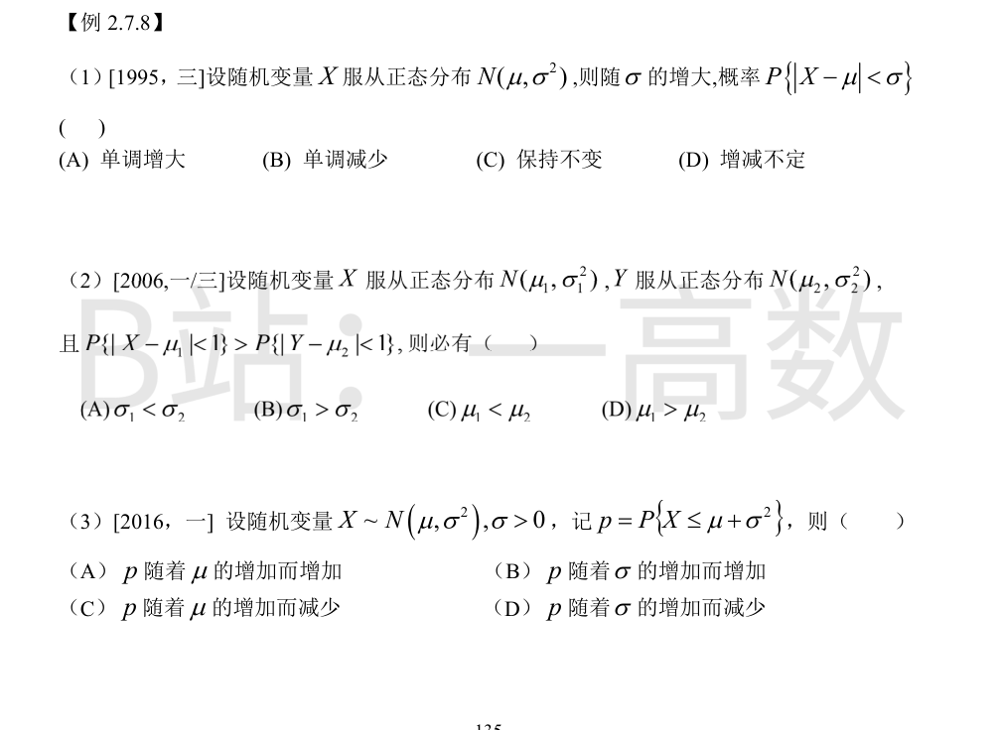
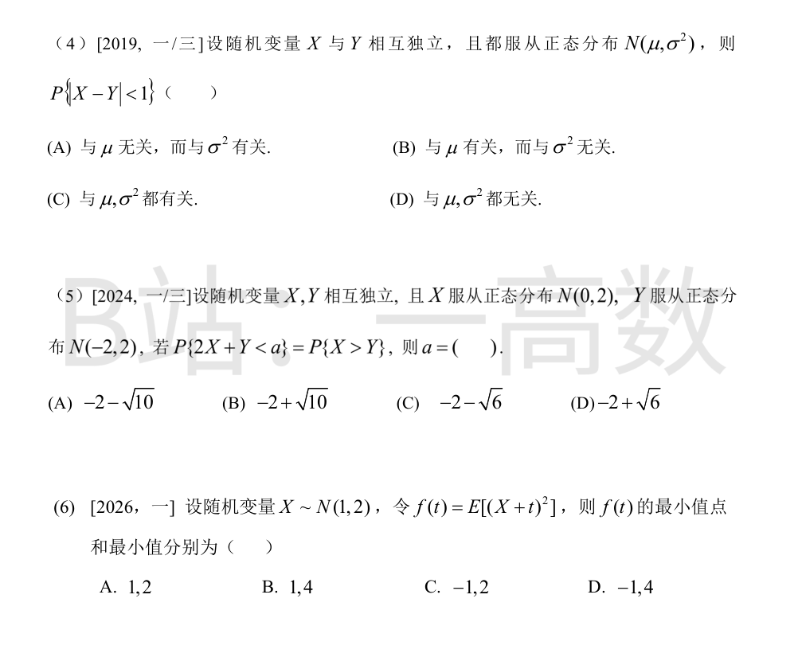
标准化：
$$P\{|X-\mu|<\sigma\}=P\Big\{\Big|\frac{X-\mu}{\sigma}\Big|<1\Big\}=2\Phi(1)-1\approx0.682\,6,$$
与 $\sigma$（也无关 $\mu$）无关，保持不变，选 (C)。
$$P\{|X-\mu_1|<1\}=2\Phi\Big(\frac{1}{\sigma_1}\Big)-1>2\Phi\Big(\frac{1}{\sigma_2}\Big)-1=P\{|Y-\mu_2|<1\}.$$
$\Phi$ 严格递增，故 $\dfrac{1}{\sigma_1}>\dfrac{1}{\sigma_2}$，即 $\sigma_1<\sigma_2$。与 $\mu$ 无关，选 (A)。
标准化：
$$p=P\{X\le\mu+\sigma^2\}=\Phi\Big(\frac{\mu+\sigma^2-\mu}{\sigma}\Big)=\Phi(\sigma).$$
$p$ 只依赖 $\sigma$：与 $\mu$ 无关（排除 A、C）；$\Phi$ 严格递增，故 $p$ 随 $\sigma$ 增加而增加，选 (B)。
独立正态线性组合：$X-Y\sim N(\mu-\mu,\ \sigma^2+\sigma^2)=N(0,2\sigma^2)$。
$$P\{|X-Y|<1\}=P\Big\{\Big|\frac{X-Y}{\sqrt2\,\sigma}\Big|<\frac{1}{\sqrt2\,\sigma}\Big\}=2\Phi\Big(\frac{1}{\sqrt2\,\sigma}\Big)-1.$$
只含 $\sigma$，不含 $\mu$：与 $\mu$ 无关、与 $\sigma^2$ 有关，选 (A)。
独立正态线性组合（第二参数为方差）：
$$2X+Y\sim N(2\cdot0+(-2),\ 4\cdot2+2)=N(-2,10),$$
$$P\{2X+Y<a\}=\Phi\Big(\frac{a+2}{\sqrt{10}}\Big).$$
$$X-Y\sim N(0-(-2),\ 2+2)=N(2,4),\qquad P\{X>Y\}=P\{X-Y>0\}=1-\Phi\Big(\frac{0-2}{2}\Big)=1-\Phi(-1)=\Phi(1).$$
由 $\Phi\big(\frac{a+2}{\sqrt{10}}\big)=\Phi(1)$ 得 $\dfrac{a+2}{\sqrt{10}}=1$，故 $a=\sqrt{10}-2$，选 (B)。
展开并利用 $EX=1$、$EX^2=Var X+(EX)^2=2+1=3$：
$$f(t)=E[X^2]+2t\,E X+t^2=t^2+2t+3=(t+1)^2+2.$$
最小值点 $t=-1$，最小值 $f(-1)=2$，选 (C)。
（亦可由 $f(t)=E[(X+t)^2]=Var(X)+(EX+t)^2=2+(1+t)^2$ 直接得出。）
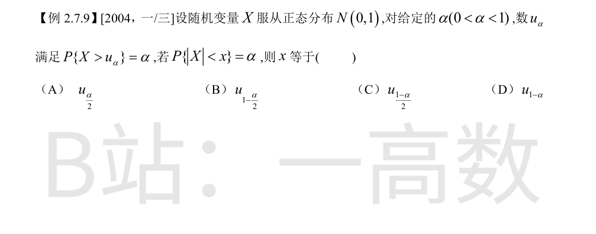
由标准正态对称性（$x>0$）：
$$\alpha=P\{|X|<x\}=\Phi(x)-\Phi(-x)=2\Phi(x)-1\;\Longrightarrow\;\Phi(x)=\frac{1+\alpha}{2}.$$
于是上侧概率
$$P\{X>x\}=1-\Phi(x)=\frac{1-\alpha}{2}.$$
按题给定义 $P\{X>u_\beta\}=\beta$，取 $\beta=\dfrac{1-\alpha}{2}$ 即得
$$x=u_{\frac{1-\alpha}{2}}.$$
排除法验证：取 $\alpha=0.95$，$x\approx1.96$，而 $u_{0.025}=1.96=u_{(1-\alpha)/2}$ 吻合；(B) $u_{1-\alpha/2}=u_{0.525}<0$，代入则 $P\{|X|<x\}=0$，矛盾；(A) $u_{\alpha/2}$、(D) $u_{1-\alpha}$ 同理不合。故选 (C)。